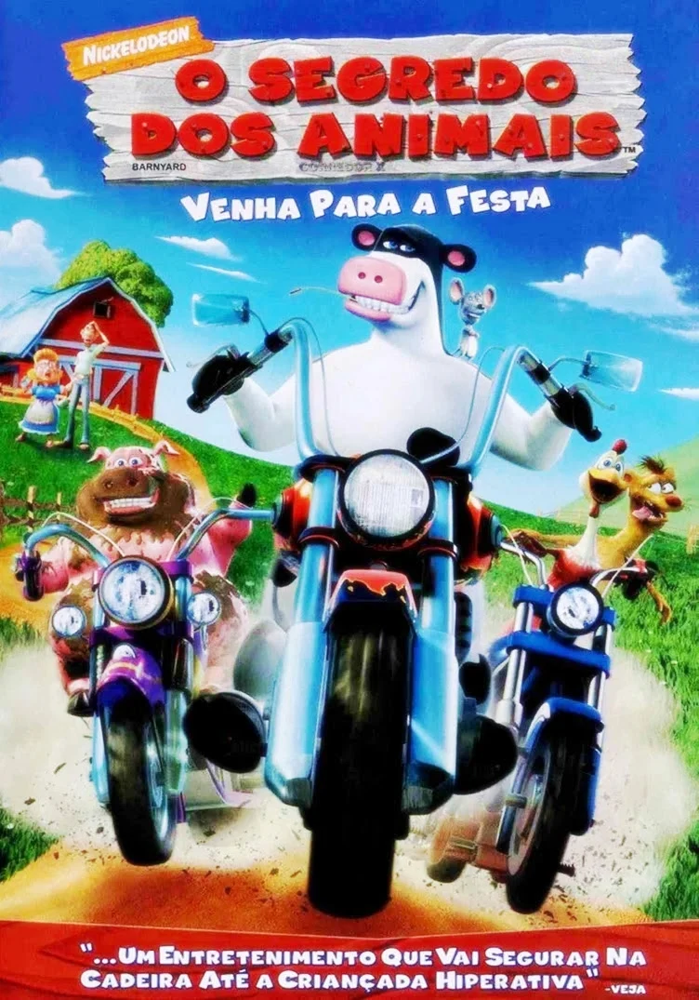
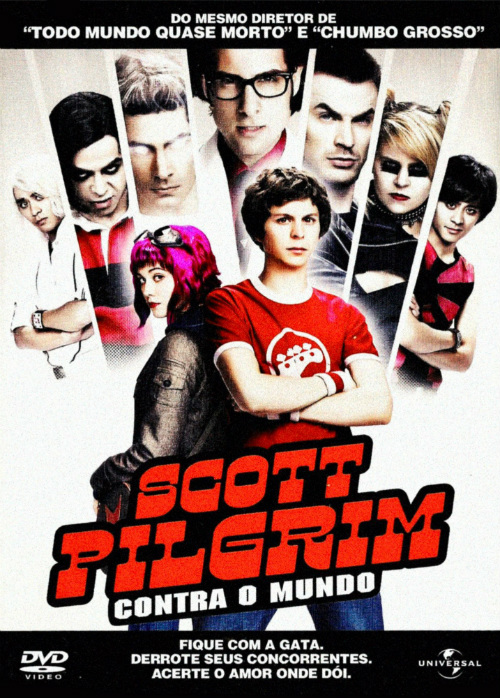

Lista de excelentes filmes

Otis, um touro que adora cantar e tocar com os outros animais do celeiro, precisa encontrar coragem para se
tornar um líder quando, inesperadamente, assume uma grande responsabilidade.
Atormentado pelo passado, um trapaceiro que vive de pequenos golpes com sua mãe adotiva encontra a redenção
como mentor de grupo de estudantes com dificuldades.

Scott Pilgrim contra o Mundo segue Scott, um guitarrista de banda, que se apaixona por Ramona Flowers. Para
ficar com ela, ele precisa derrotar seus sete ex-namorados, que vão fazer de tudo para afastá-lo.